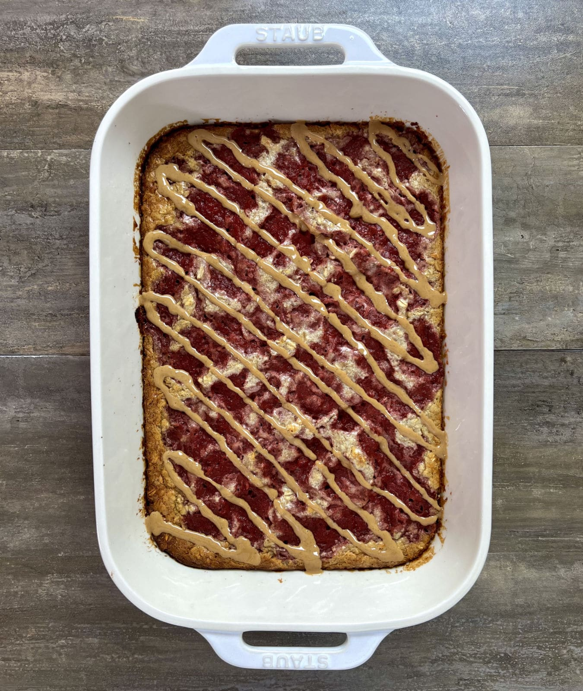

PB&J Baked Oatmeal

Description
In this recipe you'll learn how to bake your oatmeal so it's handy to grab on the go! Healthy, nutritious and delicious! Now PB&J flavoured.
Ingredients
- 3 cups (240 g) old fashioned oats
- 2 scoops (60 g) vanilla protein powder
- 1 tsp (4 g) baking powder
- 3 tbsp (48 g) peanut butter
- 2 tbsp (42 g) maple syrup
- 10 tbsp (150 g) liquid egg whites or 2 eggs
- 2 cups (480 g) milk
- 1 cup (250g) strawberry jelly
Steps
- Preheat your oven to 350°F.
- In a large bowl, mix together the oats, protein powder, and baking powder.
- Add in the egg whites, milk, syrup, and 3 tbsp of peanut butter. Stir to combine.
- Spray a 13"x9" pan with oil and add the oat mixture.
- Spoon the jelly over the top and swirl it into the oat mixture using a butter knife.
- Bake for 35-40 minutes.
Back to homepage